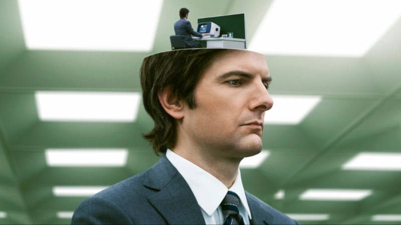
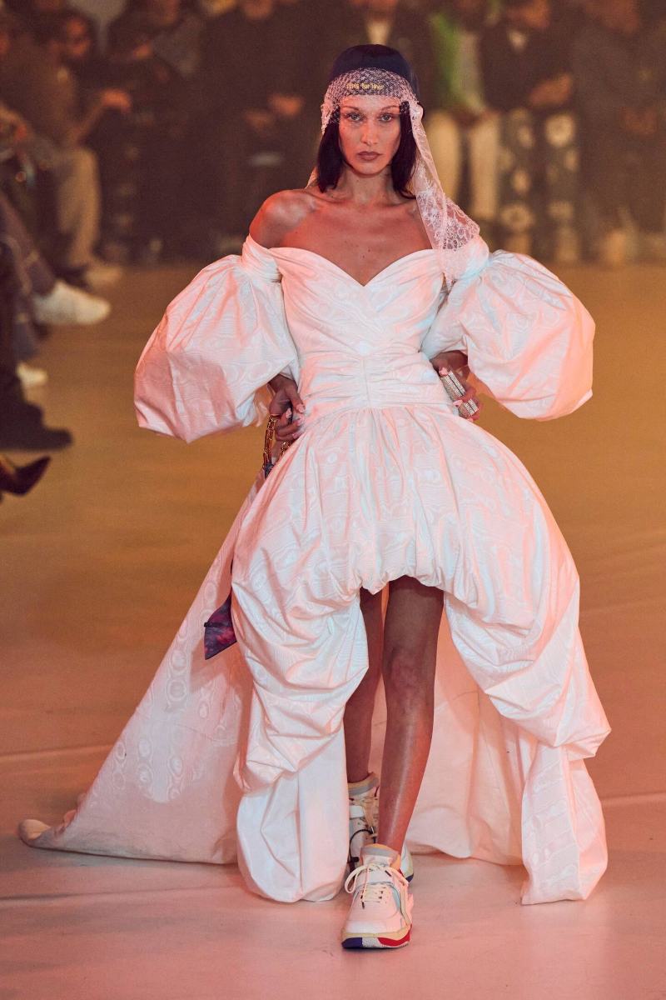
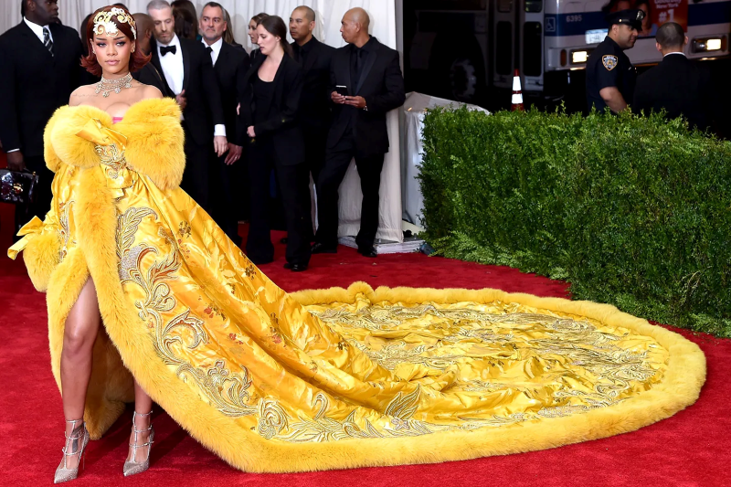

MY INTRODUCTION
Hello Everyone! My name is Sayleht Varela. I am a transfer student from Morton College. I am currently in my second semester at IIT. I am currently working torwards a Information Technology Management degree. I have a dog named snuggles and he is 10 years old but is still 1 in my eyes! I enjoy jigsaw puzzles and scrabble on my free time. I unfortunately do not have many hobbies but I love fashion & one day hope to make my own clothes! I love music, movies, and shows! I am currently watching Severance and I am obsessed!!
DESIGNS
This is Virgil's wedding dress designed for off-white& one of my favorites because he combined it with a baseball cap veil & trainers. Bella Hadid is also seen holding heels, which I thought was pretty cool! FUN FACT: Virgil Abloh who designed this dress, actually received a Master degree in Architecture here at IIT and then became a very well known designer!
This is his page if you were interested in looking at his designs! He passed away and created a page where he shows all his work and gives steps on how to create your own brand! He created a Free game page is where he gives all information for those who want to start a brand!
This is one of the best looks EVER! I have seen nothing that beats this dress. It was hand crafted by one Chinese woman which took her 2 years to complete. This dress was designed by Guo Pei.
SUPER MODEL
This is Anok Yai. One of my favorite super models and what she wore to the Met Gala!.